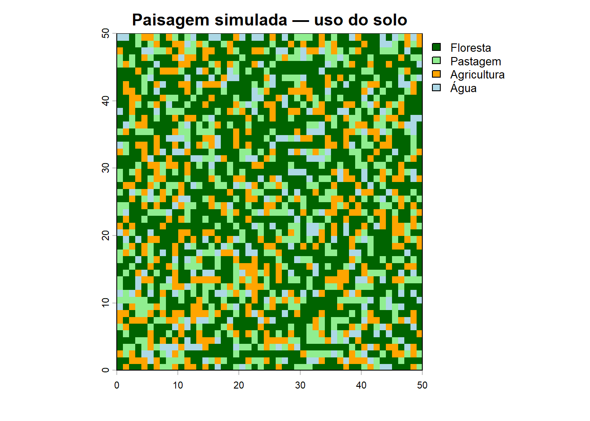
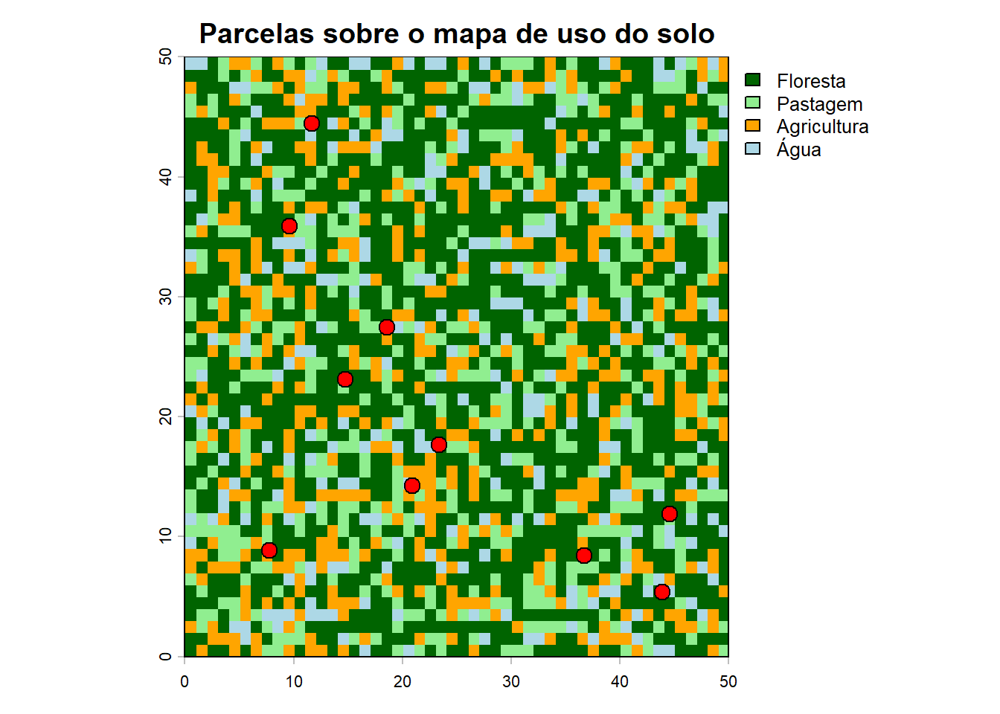
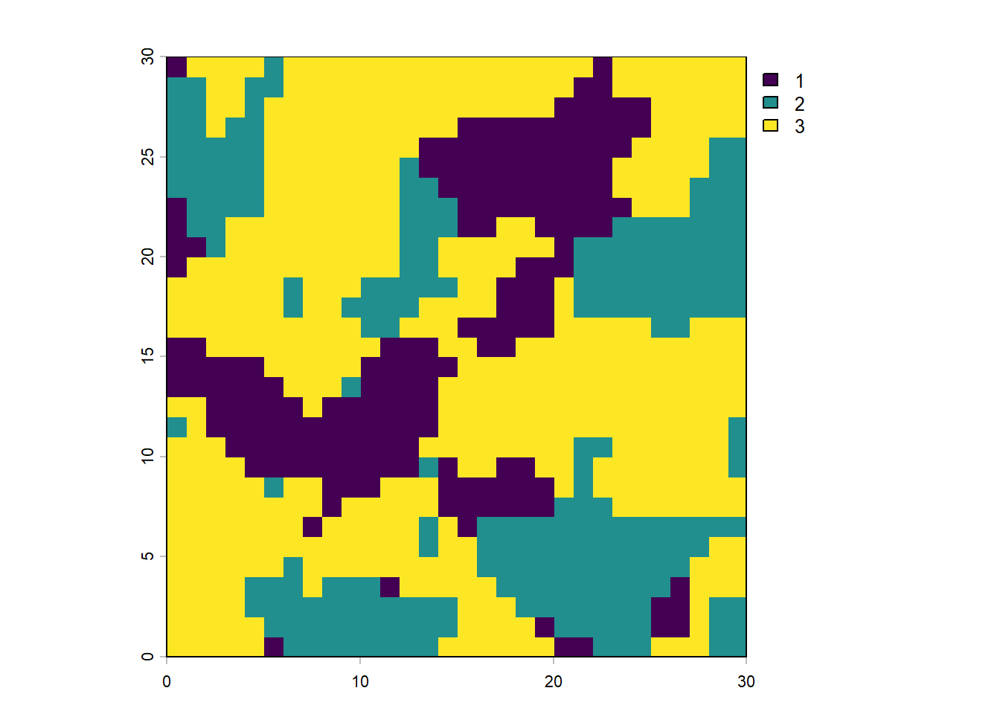
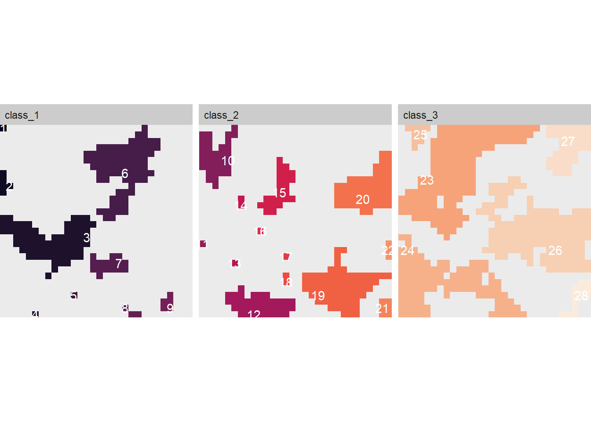
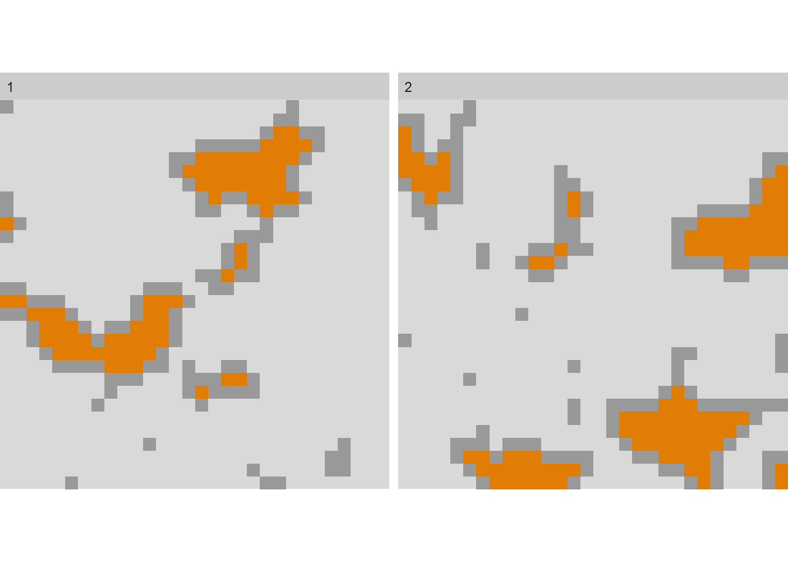
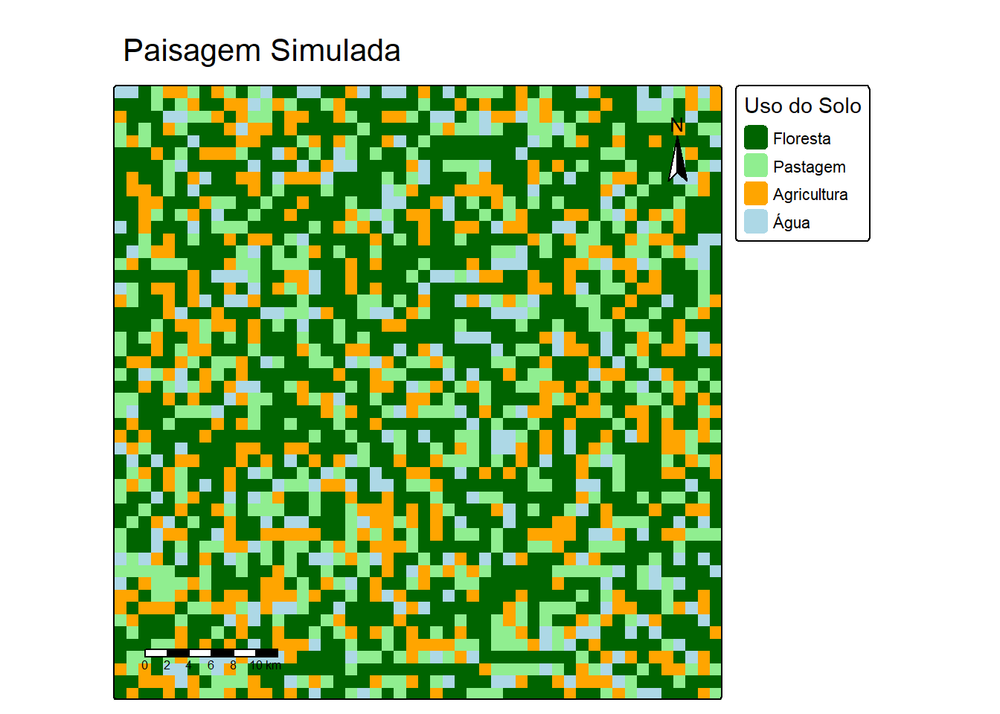

library("terra")terra 1.9.11library("sf")Linking to GEOS 3.14.1, GDAL 3.12.1, PROJ 9.7.1; sf_use_s2() is TRUElibrary("landscapemetrics")
library("tmap")
library("ggplot2")
library("vegan")Carregando pacotes exigidos: permutelibrary("tidyverse")── Attaching core tidyverse packages ──────────────────────── tidyverse 2.0.0 ──
✔ dplyr 1.2.0 ✔ readr 2.2.0
✔ forcats 1.0.1 ✔ stringr 1.6.0
✔ lubridate 1.9.5 ✔ tibble 3.3.1
✔ purrr 1.2.1 ✔ tidyr 1.3.2── Conflicts ────────────────────────────────────────── tidyverse_conflicts() ──
✖ tidyr::extract() masks terra::extract()
✖ dplyr::filter() masks stats::filter()
✖ dplyr::lag() masks stats::lag()
ℹ Use the conflicted package (<http://conflicted.r-lib.org/>) to force all conflicts to become errorslibrary("rgbif")
library("geodata")
library("geobr")
cat("✓ Todos os pacotes carregados com sucesso!\n")✓ Todos os pacotes carregados com sucesso!# Criar um raster de exemplo (paisagem simulada)
set.seed(42)
r <- rast(nrows = 50, ncols = 50,
xmin = 0, xmax = 50, ymin=0, ymax = 50)
#simulação das classes de uso de solo
values(r) <- sample(1:4, ncell(r), replace = TRUE,
prob = c(0.50, 0.20, 0.20, 0.10))
#Classes usadas
levels(r) <- data.frame(
id = 1:4,
label = c("Floresta", "Pastagem", "Agricultura", "Água"))
#vizualização do que foi feito:
plot(r,
col = c("darkgreen", "lightgreen", "orange", "lightblue"),
main = "Paisagem simulada — uso do solo",
mar = c(3, 3, 2, 6))
# Informações do raster
print(r) class : SpatRaster
size : 50, 50, 1 (nrow, ncol, nlyr)
resolution : 1, 1 (x, y)
extent : 0, 50, 0, 50 (xmin, xmax, ymin, ymax)
coord. ref. : lon/lat WGS 84 (CRS84) (OGC:CRS84)
source(s) : memory
categories : label
name : label
min value : Floresta
max value : Água # Dimensões, extensão, CRS
res(r) [1] 1 1# Resolução espacial
ext(r) SpatExtent : 0, 50, 0, 50 (xmin, xmax, ymin, ymax)# Extensão geográfica
ncell(r) [1] 2500# Número total de células
freq(r) layer value count
1 1 Floresta 1257
2 1 Pastagem 490
3 1 Agricultura 482
4 1 Água 271# Frequência de cada classe (tabela de área)
# Pacote SF (simple features)
# Criando a simulação de pontos
set.seed(7)
parcelas <- st_as_sf(
data.frame(
id = 1:10,
longitude = runif(10, 5, 45),
latitude = runif(10, 5, 45),
riqueza = rpois(10, lambda = 12)
),
coords = c("longitude", "latitude"),
crs = NA )
# Criando a forma de vizualizar sobre o RASTER
plot(r, col = c("darkgreen", "lightgreen", "orange", "lightblue"),
main = "Parcelas sobre o mapa de uso do solo")
plot(st_geometry(parcelas), add = TRUE, pch = 21,
bg = "red", cex = 1.5)
### Usando o Landscapemetrics
library(landscapemetrics)
library(terra)
paisagem <- terra::rast(landscapemetrics::landscape)
check_landscape(paisagem)Warning: Caution: Coordinate reference system not metric - Units of results
based on cellsizes and/or distances may be incorrect. layer crs units class n_classes OK
1 1 NA NA integer 3 ❓plot(paisagem)
# métricas de fragmento
areas <- lsm_p_area(paisagem)
head(areas)# A tibble: 6 × 6
layer level class id metric value
<int> <chr> <int> <int> <chr> <dbl>
1 1 patch 1 1 area 0.0001
2 1 patch 1 2 area 0.0005
3 1 patch 1 3 area 0.0072
4 1 patch 1 4 area 0.0001
5 1 patch 1 5 area 0.0001
6 1 patch 1 6 area 0.008 #isolamento
isolamento <- lsm_p_enn(paisagem)
head(isolamento)# A tibble: 6 × 6
layer level class id metric value
<int> <chr> <int> <int> <chr> <dbl>
1 1 patch 1 1 enn 7
2 1 patch 1 2 enn 4
3 1 patch 1 3 enn 2
4 1 patch 1 4 enn 6.32
5 1 patch 1 5 enn 5
6 1 patch 1 6 enn 2.24# Proporção de cada classe na paisagem
proporcao <- lsm_c_pland(paisagem)
print(proporcao)# A tibble: 3 × 6
layer level class id metric value
<int> <chr> <int> <int> <chr> <dbl>
1 1 class 1 NA pland 20.4
2 1 class 2 NA pland 26
3 1 class 3 NA pland 53.6# Proporção de cada classe na paisagem
proporcao <- lsm_c_pland(paisagem)
print(proporcao)# A tibble: 3 × 6
layer level class id metric value
<int> <chr> <int> <int> <chr> <dbl>
1 1 class 1 NA pland 20.4
2 1 class 2 NA pland 26
3 1 class 3 NA pland 53.6#Total de borda por classe
borda <- lsm_c_te(paisagem)
print(borda)# A tibble: 3 × 6
layer level class id metric value
<int> <chr> <int> <int> <chr> <dbl>
1 1 class 1 NA te 181
2 1 class 2 NA te 203
3 1 class 3 NA te 296# Índice de diversidade de Shannon
shannon <- lsm_l_shdi(paisagem)
print(shannon)# A tibble: 1 × 6
layer level class id metric value
<int> <chr> <int> <int> <chr> <dbl>
1 1 landscape NA NA shdi 1.01#Área total
area_total <- lsm_l_ta(paisagem)
print(area_total)# A tibble: 1 × 6
layer level class id metric value
<int> <chr> <int> <int> <chr> <dbl>
1 1 landscape NA NA ta 0.09### Calculando mais de uma metrica no LSM
metricas <- calculate_lsm(
paisagem,
what = c(
"lsm_l_ta", # Área total
"lsm_l_shdi", # Diversidade de Shannon
"lsm_l_pd", # Densidade de fragmentos
"lsm_c_pland", # Proporção de cada classe
"lsm_c_np" # Número de fragmentos por classe
)
)Warning: Please use 'check_landscape()' to ensure the input data is valid.print(metricas)# A tibble: 9 × 6
layer level class id metric value
<int> <chr> <int> <int> <chr> <dbl>
1 1 class 1 NA np 9
2 1 class 2 NA np 13
3 1 class 3 NA np 6
4 1 class 1 NA pland 20.4
5 1 class 2 NA pland 26
6 1 class 3 NA pland 53.6
7 1 landscape NA NA pd 31111.
8 1 landscape NA NA shdi 1.01
9 1 landscape NA NA ta 0.09# Visualizar fragmentos rotulados por classe
show_patches(paisagem, class = "all", labels = TRUE)$layer_1
# Visualizar área de núcleo (interior dos fragmentos)
show_cores(paisagem, class = c(1, 2))$layer_1
### Usando o TMAP
#Carregando os pacotes
library(tmap)
library(terra)
# Simulando uma paisagem para o mapa
set.seed(42)
r <- rast(nrows = 50, ncols = 50,
xmin = -35.5, xmax = -35.0,
ymin = -8.5, ymax = -8.0,
crs = "EPSG:4326")
values(r) <- sample(1:4, ncell(r), replace = TRUE,
prob = c(0.50, 0.20, 0.20, 0.10))
levels(r) <- data.frame(
id = 1:4,
label = c("Floresta", "Pastagem", "Agricultura", "Água")
)
# Usando o modo "view" ou de interação.
tmap_mode("view") ℹ tmap modes "plot" - "view"
ℹ toggle with `tmap::ttm()`tm_shape(r) +
tm_raster(
col.scale = tm_scale_categorical(
values = c("darkgreen", "lightgreen", "orange", "lightblue")
),
col.legend = tm_legend(title = "Uso do Solo")
) +
tm_title("Paisagem Simulada — Pernambuco") +
tm_scalebar()# Usando o modo estático, ou para publicações
tmap_mode("plot")ℹ tmap modes "plot" - "view"tm_shape(r) +
tm_raster(
col.scale = tm_scale_categorical(
values = c("darkgreen", "lightgreen", "orange", "lightblue")
),
col.legend = tm_legend(title = "Uso do Solo")
) +
tm_title("Paisagem Simulada") +
tm_scalebar(position = c("left", "bottom")) +
tm_compass(position = c("right", "top"))
### Utilizando o Vegan.
#carregando o pacote
library(vegan)
# Simulando uma matriz de abundância (sites × espécies)
set.seed(99)
comunidades <- matrix(
rpois(10 * 20, lambda = c(rep(5, 100), rep(1, 100))),
nrow = 10, ncol = 20,
dimnames = list(
paste0("Site_", 1:10),
paste0("Sp_", 1:20)
)
)
comunidades Sp_1 Sp_2 Sp_3 Sp_4 Sp_5 Sp_6 Sp_7 Sp_8 Sp_9 Sp_10 Sp_11 Sp_12 Sp_13
Site_1 5 5 3 5 7 6 8 2 5 2 0 1 1
Site_2 2 5 2 4 5 7 4 6 6 7 2 2 4
Site_3 6 3 7 4 7 6 6 4 2 3 1 0 1
Site_4 11 6 5 5 8 10 6 4 5 5 0 5 1
Site_5 5 6 7 2 5 4 5 5 4 3 1 1 0
Site_6 9 6 4 5 8 7 7 2 3 3 1 0 1
Site_7 6 4 0 6 4 2 5 5 2 9 0 0 1
Site_8 4 2 7 7 4 5 8 2 4 5 1 0 3
Site_9 4 2 0 5 5 8 1 6 2 4 0 0 0
Site_10 3 3 3 10 2 4 7 6 7 1 0 0 0
Sp_14 Sp_15 Sp_16 Sp_17 Sp_18 Sp_19 Sp_20
Site_1 0 1 1 1 1 1 1
Site_2 0 2 0 2 1 0 1
Site_3 1 1 2 1 1 1 0
Site_4 4 0 2 1 0 1 1
Site_5 1 0 2 0 2 3 1
Site_6 2 1 2 3 0 2 2
Site_7 0 1 0 2 1 2 2
Site_8 1 1 1 2 0 2 3
Site_9 1 0 1 2 2 0 2
Site_10 1 3 1 0 0 2 2# Estimando a Alfa simulada
div_shannon <- diversity(comunidades, index = "shannon")
div_simpson <- diversity(comunidades, index = "simpson")
riqueza <- specnumber(comunidades)
resultados_div <- data.frame(
site = rownames(comunidades),
riqueza = riqueza,
shannon = round(div_shannon, 3),
simpson = round(div_simpson, 3)
)
print(resultados_div) site riqueza shannon simpson
Site_1 Site_1 18 2.610 0.913
Site_2 Site_2 17 2.679 0.924
Site_3 Site_3 18 2.640 0.917
Site_4 Site_4 17 2.629 0.918
Site_5 Site_5 17 2.668 0.923
Site_6 Site_6 18 2.678 0.920
Site_7 Site_7 15 2.501 0.905
Site_8 Site_8 18 2.696 0.922
Site_9 Site_9 14 2.440 0.899
Site_10 Site_10 15 2.482 0.900# Ordenando, usando o Non-Metric Multidimensional Scaling
nmds <- metaMDS(comunidades, distance = "bray",
trymax = 50, trace = FALSE)
cat("Stress do NMDS:", round(nmds$stress, 3), "\n")Stress do NMDS: 0.137 # Stress < 0.1 = excelente; < 0.2 = bom; > 0.3 = problemático
# Visualizar
plot(nmds, type = "t", main = "NMDS — Composição de Comunidades")